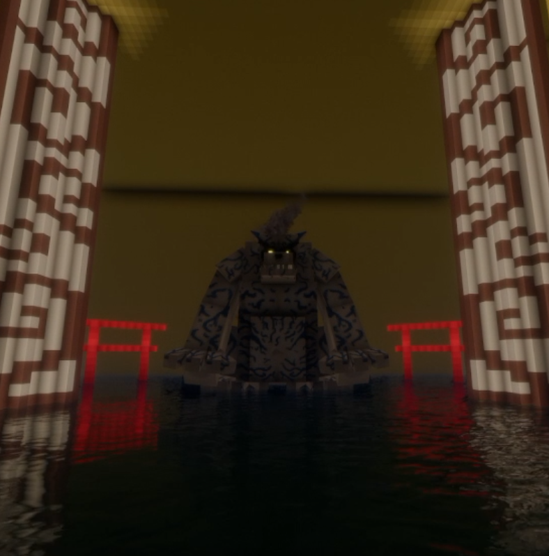

Shukaku
Bijū de 1 cola · Tanuki de arena
- Chakra
- Ocre, color arena
- Característica
- Controla la arena y el viento.
- Cómo se consigue
- Yin + 8 Cadenas de Adamantita · ver método
- Estado
- Disponible Se puede utilizar
Manto de Shukaku: 1 cola
Consigue Bijū XP derrotando enemigos o con /biju xp para avanzar de fase. Fases disponibles para Shukaku: solo la 1.
Fase 1: Manto de 1 Cola
Chakra Demoníaco Inicial
Se manifiesta la primera cola de chakra hirviente. Aumenta la velocidad, la resistencia física y regenera pequeñas heridas sin perder la cordura.
Estadísticas: Chakra: +150% | Velocidad: +25% | Daño Físico: +30

Manto y control de Shukaku
Cuando Shukaku esté al máximo (su cola), debes dormir e ir a pelear: se desbloquea el manto. Al repetirlo podrás controlar a la bestia. Necesitas una cama.
Desbloquear el manto
- Deja su cola al máximo.
- Duerme en una cama.
- Ve a pelear: se desbloquea el manto de Shukaku.
Controlar a Shukaku
- Ten el manto desbloqueado.
- Duerme de nuevo en una cama.
- Pelea otra vez: ahora podrás controlar a Shukaku.